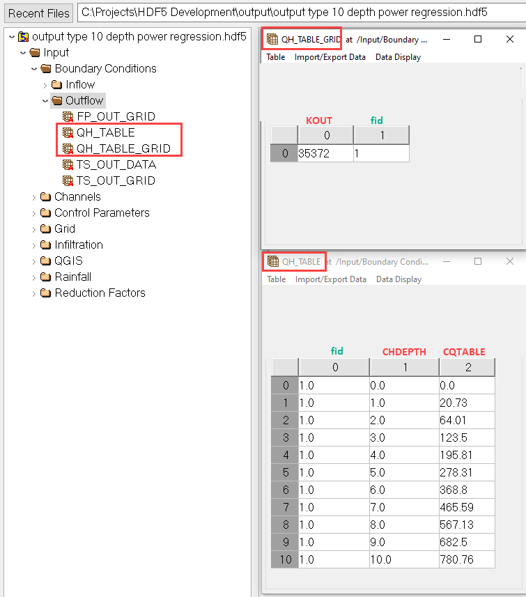
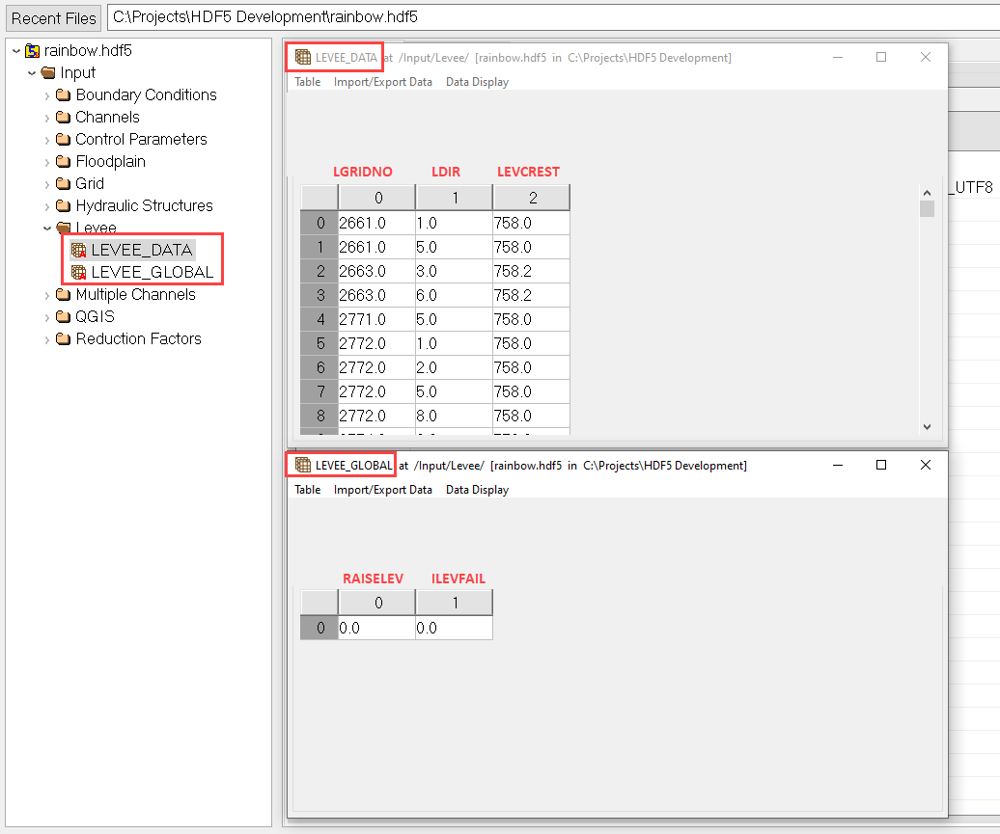

Appendix C FLO-2D HDF5 Data Structure
Boundary Conditions
Inflow

Reservoirs

Outflow
Floodplain normal depth

Channel normal depth
Floodplain time state

Floodplain and channel time stage

Channel time stage

Floodplain and channel time stage and free
Channel time stage and normal

Channel depth discharge power regression
Channel depth discharge table
Channels
Global
Global parameters and banks


Channel Natural

Channel Trapezoidal

Channel Rectangular
NoExchange
Confluence
Control Parameters
cont.dat parameters and toler.dat parameters.

Grid
x coordinate, y coordinate, elevation, mannings n, and neighbors tables
TOPO.DAT MANNINGS_N.DAT CADPTS.DAT FPLAIN.DAT NEIGHBORS.DAT

Floodplain Cross Section

Gutter
Hydraulic Structures
Infiltration
Method
Green Ampt

SCS Curve Number
Global
Spatial

Horton
Global
Spatial

Levee
LEVEE.DAT
Levee Failure Prescribed

Levee Failure Breach Erosion
BREACH.DAT HDF5 tables are complex so these images are accompanied by the Breach Dialog box images so the variables can be mapped between the hdf5, data input manual, and the FLO-2D Plugin.

BREACH.DAT HDF5 tables are complex so these images are accompanied by the Breach Dialog box images so the variables can be mapped between the hdf5, data input manual, and the FLO-2D Plugin.

Levee Failure Curve
Rainfall
Uniform rainfall
RAIN.DAT

Spatial
RAIN.DAT

Realtime Rainfall
RAIN.DAT RAINCELL.DAT
Realtime rainfall does not follow the RAINCELL.DAT file exactly. The table IRAINDUM is organized by grid element columns vs time interval rows. The rainfall data is in inches or milimeters within each cell of the table.

Storm Drain
Multiple Channel

Reduction Factors
ARF / WRF

QGIS
Tailings